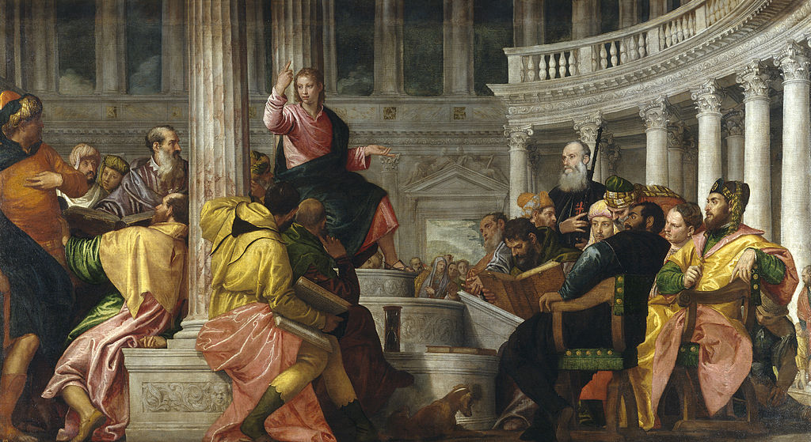

<head>
<meta charset="UTF-8" />
<meta name="keywords" content="drawing, painting" />
<meta name="description" content="drawings by Sunjy" />
<title>Sunjy</title>
<link rel="shortcut icon" type="image/x-icon" href="../../mImages/mCommon/favicon.ico" media="screen" />
<link rel="stylesheet" type="text/css" href="../../mCsses/mCommon/mCssA.css" />
<link rel="stylesheet" type="text/css" href="../../mCsses/mCommon/mCssB.css" />
<link rel="stylesheet" type="text/css" href="../../mCsses/mCommon/mCssC.css" />
<link rel="stylesheet" type="text/css" href="../../mCsses/mCommon/mCssD.css" />
<link rel="stylesheet" type="text/css" href="../../mCsses/mContent/mCssA.css" />
<link rel="stylesheet" type="text/css" href="../../mCsses/mContent/mCssB.css" />
<link rel="stylesheet" type="text/css" href="../../mCsses/mContent/mCssC.css" />
<link rel="stylesheet" type="text/css" href="../../mCsses/mContent/mCssD.css" />
</head>
<script type="text/javascript" src="../../mScripts/mContent/mContentAA.js" /></script>
<script type="text/javascript" src="../../mScripts/mContent/mContentAB.js" /></script>
<script type="text/javascript" src="../../mScripts/mContent/mContentAC.js" /></script>
<script type="text/javascript" src="../../mScripts/mContent/mContentAD.js" /></script>
<script type="text/javascript"></script> 
<script type="text/javascript">
document.write('<div class="mImgAbsolute"></div>');
/*
document.write('<p class="mFontSizeBColor" />From a white paper...</p>');
document.write('<table class="center"><tr><td>');
document.write('');
document.write('</td></tr></table>');
*/
</script>


<script type="text/javascript">
document.write('<p class="mFontSizeBColor" />Christ among the Doctors</p>');
document.write('<p class="mFontSizeSColor" />“Christ among the Doctors” by Paolo Veronese depicts the story from the final passage on Christ’s childhood, in Luke 2, 41-50, when, at the age of 12, he was taken to Jerusalem by his parents to celebrate Passover.<br><br>The Biblical story of the “Finding in the Temple” also called in art by the standard titles of “Christ among the Doctors” or “Disputation.” It was an episode in the early life of Jesus, and the only event of the later childhood of Jesus mentioned in a gospel.<br><br>The episode describes how Jesus, at the age of twelve, accompanies Mary and Joseph, and their relatives and friends to Jerusalem on pilgrimage during Passover.<br><br>On the day of their return, Jesus stayed behind in the Temple, but Mary and Joseph thought that he was among their group as Mary and Joseph headed back home.<br><br>After a day of travel, they realized Jesus was missing, so they returned to Jerusalem, finding Jesus three days later. Mary and Joseph found Jesus in The Temple in an in-depth discussion with the elders.<br><br>The elders were amazed at his learning, especially given his young age. When admonished by Mary, Jesus replied:<br><br>“Did you not know that I must be in my Father’s house?”<br><br>Paolo Veronese shows Christ’s theological superiority by emphasizing his placement towards the top of the composition’s axis. The elders look on as he enumerates his arguments with his fingers.<br><br>One of the older onlookers with a beard, who is holding a pilgrim’s staff, is most likely the person who commissioned this painting. He wears the habit of a Knight of the Holy Sepulcher, indicating he had conducted a pilgrimage to the Holy Lands.<br><br>Mary and Joseph are in the background, just having entered the Temple. Jesus and the elders intent on their discussions, have not noticed them yet.<br><br>A man with his back turned to the viewer, holds a book with the number MCXLVIII (1548) on the edge of the book. This date has generated debate and speculation among modern specialists.<br><br>The date 1548 does not concord with the period of 1565 as the earliest possible date for the painting’s creation.<br><br>This painting was recorded as being in Padua in 1648, but by 1686 it was in Madrid, possibly brought back between 1649 and 1651 by Diego Velázquez after his second trip to Italy. <br></p>');
document.write('<table class="center" /><tr><td>');
document.write('<br>The Biblical story of the “Finding in the Temple” also called in art by the standard titles of “Christ among the Doctors” or “Disputation.” It was an episode in the early life of Jesus, and the only event of the later childhood of Jesus mentioned in a gospel.<br><br>The episode describes how Jesus, at the age of twelve, accompanies Mary and Joseph, and their relatives and friends to Jerusalem on pilgrimage during Passover.<br><br>On the day of their return, Jesus stayed behind in the Temple, but Mary and Joseph thought that he was among their group as Mary and Joseph headed back home.<br><br>After a day of travel, they realized Jesus was missing, so they returned to Jerusalem, finding Jesus three days later. Mary and Joseph found Jesus in The Temple in an in-depth discussion with the elders.<br><br>The elders were amazed at his learning, especially given his young age. When admonished by Mary, Jesus replied:<br><br>“Did you not know that I must be in my Father’s house?”<br><br>Paolo Veronese shows Christ’s theological superiority by emphasizing his placement towards the top of the composition’s axis. The elders look on as he enumerates his arguments with his fingers.<br><br>One of the older onlookers with a beard, who is holding a pilgrim’s staff, is most likely the person who commissioned this painting. He wears the habit of a Knight of the Holy Sepulcher, indicating he had conducted a pilgrimage to the Holy Lands.<br><br>Mary and Joseph are in the background, just having entered the Temple. Jesus and the elders intent on their discussions, have not noticed them yet.<br><br>A man with his back turned to the viewer, holds a book with the number MCXLVIII (1548) on the edge of the book. This date has generated debate and speculation among modern specialists.<br><br>The date 1548 does not concord with the period of 1565 as the earliest possible date for the painting’s creation.<br><br>This painting was recorded as being in Padua in 1648, but by 1686 it was in Madrid, possibly brought back between 1649 and 1651 by Diego Velázquez after his second trip to Italy. <br>" />');
document.write('</td></tr></table>');
</script>


